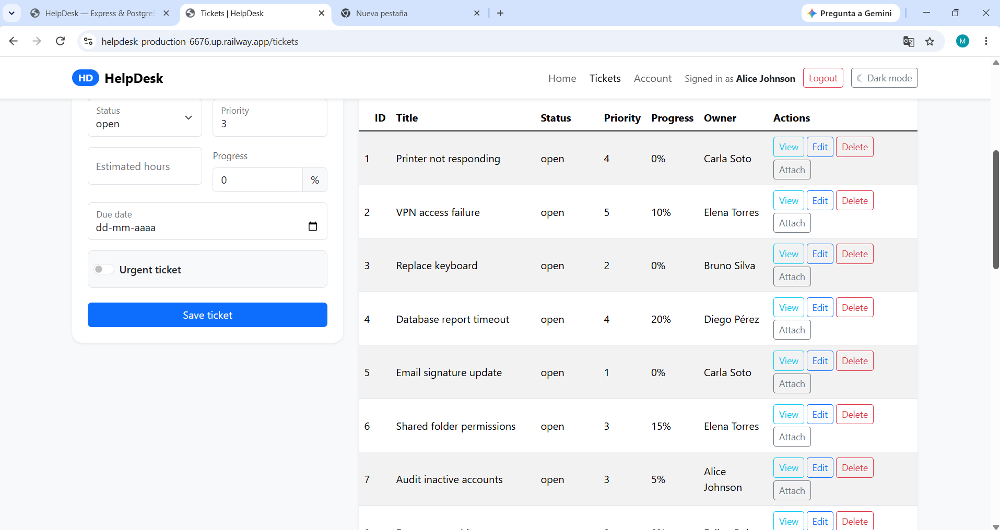

Full Stack Project
HelpDesk
Aplicación para gestionar tickets de soporte mediante una API REST compartida por una interfaz Web y un cliente CLI. Incluye autenticación JWT, relaciones de datos, filtros y archivos adjuntos.
- CRUD y filtros de tickets.
- Autenticación con bcrypt y JWT.
- PostgreSQL con Sequelize.
- Web con Handlebars, Bootstrap y Fetch.
- CLI que consume la misma API.
Node.js · Express · Sequelize · PostgreSQL · Handlebars · Bootstrap